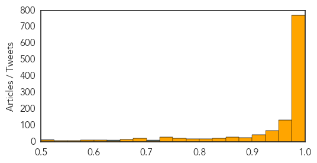

Ebola
30-Day Web Trend
17 alerts, 1 warnings

30-Day Twitter Trend
16 alerts, 4 warnings

Article Locations

Article Confidences
Top Articles:
- 1.000
- Questions and answers about Ebola
- 1.000
- Latest Developments In The Ebola Story
- 1.000
- Beefed-up measures to stop Ebola in its tracks
- 1.000
- No one is free from the risks of Ebola – Sin Chew Daily
- 1.000
- Zimbabweans in mortal fear
- 1.000
- Ebola in Liberia: Liberia President describes Ebola effects in a 'Letter to the World'
- 1.000
- Region 7 quarantine, health execs get ready
- 1.000
- Cuba sends more aid to Ebola zone
- 1.000
- Ebola threat in US, and we're not prepared to contain it, experts warn
- 1.000
- Researchers try to quell Ebola fears
- 1.000
- No confirmed Ebola cases in South Africa
- 1.000
- Monitoring ends for dozens on Ebola watch lists
- 1.000
- 5 misconceptions about Ebola
- 1.000
- Latest Developments In The Ebola Story : The Two-Way : NPR
- 1.000
- Ebola, now a household word, as the United States responds here, as well as where it began
- 1.000
- Ebola patient's family completes 21-day quarantine
- 1.000
- Ebola outbreak: Hundreds of parents remove schoolchildren after principal visits Zambia
- 1.000
- Ebola outbreak: Hundreds of parents remove schoolchildren after principal visits Zambia
- 1.000
- Ebola outbreak: Britain steps up airport screening as UN aid worker dies from virus
- 1.000
- Ebola crisis: Nigeria declared Ebola-free three days after Senegal beats virus
- 1.000
- Ebola crisis: How much are different countries donating to fight the outbreak – and is it enough?
- 1.000
- Third UN employee dies from Ebola
- 1.000
- Ebola Outbreak 2014: WHO Declares Nigeria Ebola-Free : News : Headlines & Global News
- 1.000
- Worst Ebola outbreak on record tests global response
- 1.000
- Ebola patient's family completes 21-day quarantine
- 1.000
- Ebola fears, flu season collide
- 1.000
- U.S. ramps up Ebola response
- 1.000
- U.N. staffer dies of Ebola
- 1.000
- The latest on the Ebola crisis
- 1.000
- Ebola Today: Nigeria is Now Free of Ebola, WHO Declares
- 1.000
- Researchers try to quell fears over Ebola;
- 1.000
- Ebola: WHO under fire over response to epidemic
- 1.000
- Big Challenges Ahead in Fighting Ebola
- 1.000
- ABC-7.com WZVN News for Fort Myers, Cape Coral & Naples, Florida
- 1.000
- The Latest On The Ebola Crisis: What You Need To Know
- 1.000
- Latest Developments In The Ebola Story
- 1.000
- Ebola update: Texas quarantine lifted; talk of travel bans
- 1.000
- 4 Pieces Of Good News About Ebola That Have Gotten Lost In The Hysteria
- 1.000
- Kansas health officials review Ebola plan
- 1.000
- Latest Developments In The Ebola Story
- 1.000
- CDC issues new guidelines for hospitals for Ebola
- 1.000
- Dallas hospital confirms first Ebola case in US
- 1.000
- Ebola crisis turns a corner as U.S. issues new treatment protocols
- 1.000
- Ebola crisis turns a corner as U.S. issues new treatment protocols
- 1.000
- Ebola quarantines end for 43 people in Dallas
- 1.000
- What you need to know about Ebola
- 1.000
- World Outbreak of Ebola – a Timeline of a Killer
- 1.000
- Ebola crisis: Worst-hit African nations get key supplies
- 1.000
- Ebola Front-Line Doctors at Breaking Point
- 1.000
- CHRONOLOGY-Worst Ebola outbreak on record tests global response
Showing top 50 articles...
Top Tweets:
- 0.955
- RT: Haiti Ministry's of health has announced harshest measures taken by no other countries to prevent Ebola in Haiti http:/…
- 0.952
- Nigeria's Ebola outbreak is officially over. Hoping Africa's biggest country stays Ebola free. http://t.co/vHTxKR9M7y
- 0.936
- Malaria deaths in West Africa likely to soar as Ebola cripples health systems http://t.co/EROGGWnu7A globalhealth
- 0.918
- Il doit présenter à son port de débarquement en Haïti un carnet de santé, incluant le test pr l’Ebola, émis par un centre autorisé.
- 0.909
- Great news! MT officially declares Ebola outbreak in Nigeria over & commends country on diligence to end transmission of the virus.
- 0.900
- Since Dec. 2013, Guinea, Liberia, Nigeria & Sierra Leone reported over 7k Ebola cases. You can help: http://t.co/TLqVpENLQO FightingEbola
- 0.889
- RT: Frieden: All front line health care workers must think " ebola" and also need a site mgr at each ebola treatment unit
- 0.870
- RT: Health officials still have plenty of opportunity to keep the Ebola virus from spreading in the United States: http://t.co/07gp…
- 0.861
- Ebola hysteria: An epic, epidemic overreaction? http://t.co/4MAUaZQhbg
- 0.861
- Ebola hysteria: An epic, epidemic overreaction http://t.co/pq6gMaMzPb
- 0.842
- Ebola Outbreak http://t.co/LKOmbBH4VM via
- 0.838
- RT: ebola haiti prevention http://t.co/JGAoZmfTP5
- 0.812
- 2 African countries freed of Ebola; Texas patient's fiance ends quarantine http://t.co/TxK8vp8B5j
- 0.809
- Ebola can enter through broken skin or unprotected mucus membranes.
- 0.775
- The Ebola Wars. How genomics research can help contain the outbreak. via http://t.co/ikpSbSIBRz
- 0.767
- Scientists want to fight the Ebola outbreak using robots http://t.co/tNPezzmmUw
- 0.747
- For WHO to declare an Ebola outbreak over, a country must pass through 42 days w/ no new cases detected.
- 0.743
- RT: How Did Nigeria Quash Its Ebola Outbreak So Quickly? http://t.co/rhsrSxGsc6 Ebola science http://t.co/nkDsBGyZqC
- 0.721
- RT: Nigeria is now free of Ebola virus transmission http://t.co/LyfE3s9b2C
- 0.721
- RT: Nigeria is now free of Ebola virus transmission http://t.co/H2dYtd0ea0
- 0.720
- The world just got 2 lucky breaks on the Ebola front. Against the odds, Nigeria contained its outbreak & Texas 48 out of quarantine healthy
- 0.710
- Ebola: Can you quarantine West Africa? Solid analysis from http://t.co/BfnupTeTLu
- 0.700
- Yes, a 1:10 dilution of bleach will kill Ebola. Any EPA-approved disinfectant for non-enveloped viruses will kill Ebola
- 0.682
- EbolaResponse facts: Here's what we know about transmission of the Ebola virus among humans: http://t.co/9qfKsghjiD via
- 0.675
- Inside the world's worst Ebola outbreak: Monrovia, Liberia (CNN) -- A doctor at a government-ru... http://t.co/N4ntgc1FXP ElbowOutEbola
- 0.653
- RT: WHO says Nigeria's Ebola outbreak over http://t.co/pbluJqbSKn via
- 0.643
- RT: WHO officially declares the Ebola outbreak in Nigeria over and commends the country on its diligence to end the transmission of …
- 0.643
- RT: WHO officially declares the Ebola outbreak in Nigeria over and commends the country on its diligence to end the transmission of …
- 0.633
- RT: Frieden: CDC doing rapid assessments on hospitals to determine fitness to treat ebola patients.
- 0.625
- Ebola is like a disease from another planet: one survivor tells her story of beating Ebola. http://t.co/a2CRzsZ0WT
- 0.624
- Contact tracing is one of most important tools CDC uses to prevent the spread of Ebola. http://t.co/H9OpXo5xyh
- 0.620
- Great news: Norwegian nurse infected with Ebola while working with MSF has been discharged from hospital. Did she get ZMab? VSV-EBOV?
- 0.609
- RT: End Ebola now shakeebolaoff emergencyusa https://t.co/cLa7J5VSnL
- 0.602
- Ebola patient's family completes 21-day quarantine http://t.co/SmqTSZLg9Q
- 0.584
- So the Norwegian "nurse" who has recovered from Ebola is actually a doctor. Hospital will not say what experimental drugs she received.
- 0.578
- RT: Je participe actuellement au Sommet des Chefs d'Etat et de Gouvernement de l'ALBA sur l'Ebola à Cuba. http://t.co/3qo…
- 0.566
- Powering the Ebola response: photos from on the ground in Liberia w FightingEbola http://t.co/juxrEvJYrF
- 0.558
- How has Ebola affected motorbike taxi drivers and teachers in Sierra Leone? Video portraits from http://t.co/fq7bV4uAtw
- 0.553
- No evidence of Ebola Vaccine & Autism. aspergers Psychiatry healthcare CDCwhistleblower üá∫üá∏üë™üëèüëãüëãüëèüëãüëèüëãüëèüë™üá∫üá∏ üëá http://t.co/vRsocZfKDA ‚úã ‚òùÔ∏è
- 0.546
- Inside the world's worst Ebola outbreak http://t.co/OB20t7hTlb
- 0.541
- Ebola is not an airborne disease: http://t.co/qfmsArzMzb
- 0.537
- declares Nigeria Ebola free; MERS in KSA. HealthSecurity http://t.co/H1JhGDbj22
- 0.530
- ICYMI: Our Director (@T_Inglesby) discusses states' preparedness for medical emergencies on http://t.co/qX6Cput9xV Ebola
- 0.519
- The real lesson of Ebola in Dallas: this virus is very difficult to spread http://t.co/mHS5SxMUbs http://t.co/Zw992z44VV
- 0.510
- RT: Frieden: Important to have separate "clean" and "dirty" areas in treatment facilities ebola
- 0.509
- .@ebolaliveblog Not sure I understand your Q. I am not afraid I am going to die of Ebola. I am afraid too many people in West Africa will.
Chikungunya
30-Day Web Trend
0 alerts, 2 warnings

30-Day Twitter Trend
2 alerts, 0 warnings
Article Locations
Article Confidences

Top Articles:
- 0.994
- News Scan for Oct 20, 2014
- 0.993
- Costa Rica Confirms First Chikungunya Case Originating in Country
- 0.912
- 1st Indigenous Case of Chikungunya in Costa Rica Reported
- 0.615
- Chikungunya: Jamaica PM Miller declares ‘state of emergency’
- 0.579
- Long-term persistence of Chikungunya virus neutralizing antibodies in human populations of North Eastern Thailand
Top Tweets:
- 0.759
- RT: .@MichelJMartelly: Hay un estado de chikungunya actual,hemos reducido el VIH y hemos sido calificados como país libre de ru…